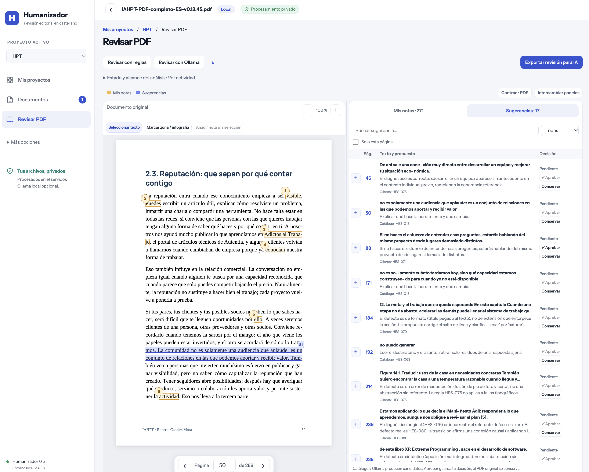
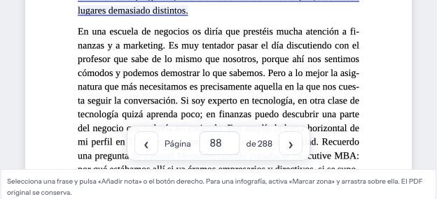

Edición asistida · La última palabra es tuya
Lee el original.
Decide cada cambio.
Reúne tus notas y las sugerencias editoriales junto al PDF. Una herramienta gratuita para revisar textos que han pasado de la voz de una persona a una composición con IA.
Al convertir clases, locuciones o borradores en un libro, una corrección puede borrar un matiz o convertir una escena en una frase genérica. Humanizador permite señalarlo, leer el contexto y preparar una revisión que otra persona o una IA pueda seguir con referencias concretas.


01 · Preparación
Instalar y arrancar
Descarga el ZIP del repositorio, descomprímelo y abre una terminal en esa carpeta. También puedes clonarlo con Git. Necesitas Node.js 24 o posterior con npm y un navegador actual; el asistente te ayuda si Node no está instalado.
Mac y Linux
sh instalar.shEl asistente muestra los pasos, instala dependencias, compila la aplicación y pregunta si quieres usar solo reglas o preparar Ollama. Al final ofrece arrancar y abrir el navegador. Las descargas de modelos requieren una confirmación aparte. Si falta Node, abre su instalador oficial; complétalo y vuelve al asistente. En Linux sigue las instrucciones correspondientes a tu distribución.
Windows
Abre PowerShell en la carpeta descomprimida:
.\instalar.ps1Si la política de PowerShell bloquea el script, revisa su contenido antes de ejecutarlo. Puedes permitirlo únicamente en el proceso de instalación:
powershell -NoProfile -ExecutionPolicy Bypass -File .\instalar.ps1Esto no cambia la política global. En un equipo administrado, consulta su política. Con Node ya instalado también puedes usar node tools/install.mjs; para arrancar y parar, node tools/lifecycle.mjs start y node tools/lifecycle.mjs stop. El asistente ofrece abrir la descarga de Node si falta y lo comprueba al terminar. Fuente: políticas de ejecución de PowerShell.
Después de instalar
| Acción | Mac / Linux | Windows PowerShell |
|---|---|---|
| Arrancar | sh arrancar.sh | .\arrancar.ps1 |
| Parar | sh parar.sh | .\parar.ps1 |
| Elegir otro modelo | sh instalar.sh --configure | .\instalar.ps1 -Configure |
| Diagnóstico sin cambios | sh instalar.sh --check | .\instalar.ps1 -Check |
El arranque abre normalmente http://127.0.0.1:8787/. Si ese puerto está ocupado busca otro y lo explica en la web. Ante un fallo abre un diagnóstico local. Repetir el arranque reinicia su instancia de forma segura; no detiene servicios ajenos. Cerrar la pestaña mantiene el servidor activo.
Puedes repetir el instalador: conserva PDF, notas y decisiones. Guarda las preferencias en data/settings.json y pregunta antes de parar una instancia registrada para actualizar dependencias. Si se interrumpió y dejó data/installer.lock, cierra primero cualquier instalador y elimina solo ese archivo antes de repetir.
Este sitio aloja el manual. La aplicación se ejecuta en tu ordenador o en un servidor que prepares; no subes tus PDF a GitHub Pages.
Revisión local opcional
Preparar Ollama sin descargar a ciegas
Para leer, anotar y revisar con reglas no necesitas Ollama. Para la revisión contextual hay dos pasos: instalar y abrir Ollama, y elegir un modelo local. El instalador de Humanizador ofrece ambas orientaciones, permite usar modelos existentes y pregunta antes de descargar otro. No genera texto al comprobar la conexión.
Ollama en Mac
Descarga Ollama para Mac, arrástralo a Aplicaciones y ábrelo. Requiere macOS 14 o posterior. Apple Silicon puede usar CPU y GPU; Mac Intel utiliza CPU, por lo que una revisión puede ser lenta. Consulta los requisitos oficiales de Mac.
Ollama en Windows
Descarga OllamaSetup, instálalo y abre Ollama. Se necesita Windows 10 22H2 o posterior. La aceleración depende de tu GPU y sus controladores; un equipo sin GPU compatible puede usar CPU. Abre una terminal nueva después de instalar para que reconozca ollama. No es necesario publicar su puerto ni desactivar el cortafuegos. Consulta los requisitos oficiales de Windows.
En Linux, sigue la guía oficial y comprueba el servicio.
Elegir un modelo
Repite el asistente con --configure en Mac/Linux o -Configure en PowerShell. Puedes conservar tu configuración, elegir una etiqueta instalada o descargar otra. Como alternativa de menor tamaño se ofrece qwen3.5:4b, que ocupa varios GB; su calidad editorial no está comparada con la de modelos mayores. La configuración histórica qwen3.6:27b-q8_0 ronda los 30 GB de descarga y no se instala automáticamente.
Revisa la ficha y licencia del modelo. El tamaño en disco no equivale a RAM: el contexto también ocupa memoria. No hay una garantía de velocidad o calidad para cualquier equipo. Mantén Ollama actualizado si un modelo reciente no carga.
Comprobar y entender su actividad
En la aplicación, despliega Instalación y ayuda, junto a los botones de revisión o en Configuración. Distingue integración desactivada, servicio sin respuesta, modelo ausente y modelo preparado. Una falta de conexión puede significar que Ollama está cerrado, no necesariamente que falte.
ollama list
ollama psEl primero enumera los modelos instalados; el segundo muestra los cargados y su uso de CPU/GPU. Un modelo puede permanecer en memoria sin estar generando. La actividad real de la revisión se consulta en Estado y alcance del análisis · Ver actividad. Solo empieza inferencia al pedir una revisión o continuar una pendiente. Más información: configuración, memoria, logs y solución de problemas.
02 · Tu documento
Crear un proyecto y abrir el PDF
- En Mis proyectos, crea un proyecto que agrupe tu trabajo.
- Abre Documentos y sube el PDF. El límite predeterminado es 100 MB y 300 páginas.
- Entra en Revisar PDF. Puedes empezar a leer y anotar; subir el archivo no lanza Ollama.
El PDF debe contener texto seleccionable para analizar sus frases. Un escaneado puede verse, pero necesita OCR externo para revisar el texto. Comprueba columnas, tablas y palabras cortadas contra la imagen original.
03 · Lectura
Anotar frases e infografías
En Seleccionar texto, marca una frase y pulsa Añadir nota a la selección, o usa el botón derecho para abrir la anotación. Escribe qué quieres revisar: un sujeto confuso, un ejemplo incompleto, una idea que falta o una instrucción de cambio.
Para una figura, activa Marcar zona / infografía y arrastra sobre la región. La nota conserva página, coordenadas y un recorte para que la referencia no dependa de recordar dónde estaba. El contenido del PDF no cambia.
La pestaña Mis notas reúne tus anotaciones. Las marcas amarillas permiten volver a su posición. El zoom facilita leer, y los controles de página permanecen en la parte inferior del visor mientras te desplazas por el documento.

Puedes contraer el menú, ajustar la separación entre paneles, intercambiarlos o contraer el PDF para dedicar más espacio a las notas y a la tabla.
04 · Dos formas de revisar
Pedir sugerencias cuando las necesites
| Opción | Qué hace | Qué necesita |
|---|---|---|
| Revisar con reglas | Busca patrones definidos en el catálogo, sin inferencia. | La aplicación instalada y texto extraíble. |
| Revisar con Ollama | Añade lectura contextual y propuestas mediante un modelo local. | Ollama abierto, un modelo compatible instalado y recursos suficientes. |
Si quieres usar el modelo, sigue la preparación de Ollama para tu sistema. Puedes empezar con reglas y configurarlo más adelante.
Abre Estado y alcance del análisis · Ver actividad para consultar fase, progreso y fallos. Una revisión local puede tardar: procesa fragmentos y comprueba las propuestas. La aplicación no exige producir un número mínimo de hallazgos.
05 · Tu criterio
Leer, ajustar y decidir en la tabla
Abre la pestaña Sugerencias. Las marcas azules identifican en el documento lo que han encontrado el catálogo o el modelo. Puedes buscar en la tabla, filtrar por estado y limitarla a la página actual. El número de página te lleva al pasaje y el botón + abre el detalle.
- Lee la frase y sus párrafos vecinos. Comprueba si el aviso tiene sentido en ese contexto.
- Revisa la explicación y la sustitución, si existe. Puedes ajustar la propuesta y añadir una nota.
- Usa Aprobar cuando quieras conservar esa decisión o Conservar cuando el original sea adecuado. Puedes reabrirla después.
Si no hay una sustitución válida, redacta una antes de aprobar. Una propuesta puede retirarse por cambiar una condición o una cifra, mientras su diagnóstico sigue disponible. Aprobar guarda tu decisión; no modifica ni vuelve a maquetar el PDF.
06 · Continuar la edición
Una exportación con toda la revisión
Pulsa Exportar revisión para IA. Obtendrás un JSON con el documento identificado por su huella, notas del usuario, texto y recortes seleccionados, sugerencias, sustituciones, estados de decisión, contexto y anclajes. Las revisiones anteriores quedan diferenciadas del estado actual.
Las páginas y coordenadas ayudan a localizar figuras; las citas, offsets Unicode y hashes ayudan a localizar texto y comprobar que la base coincide. Una IA externa puede usar estas referencias para preparar cambios en el manuscrito, pero necesita disponer de ese manuscrito. El JSON no es un PDF corregido.
Una indicación útil al entregarlo sería:
Usa este JSON como registro de revisión. Respeta las decisiones y notas del autor, separa las propuestas pendientes, comprueba cada cita en la misma versión del manuscrito y conserva condiciones, ejemplos y voz. Señala referencias que no puedas localizar. Prepara los cambios para revisión manual.
Exportar descarga un archivo; no lo envía a otra IA. Decide qué compartes: el JSON puede contener fragmentos y recortes privados. Las APIs de operaciones aprobadas conservan sus propias precondiciones; no trates todas las sugerencias del JSON editorial como órdenes aprobadas.
07 · Continuidad
Parar sin perder la revisión
Usa sh parar.sh en Mac/Linux o .\parar.ps1 en Windows. Los trabajos en curso quedan en pausa y se conservan los fragmentos completos válidos. Al arrancar otra vez, la aplicación permite continuar o dejar el análisis pendiente.
La reutilización depende de que sigan coincidiendo texto, contexto, modelo, prompt y configuración. Si cambias esas condiciones puede ser necesario revisar de nuevo. Los PDF, notas y decisiones permanecen en data/, que no se publica con Git.
npm run backup -- /ruta/privada/copia.sqliteLa copia incluye documentos y revisiones. Consérvala fuera del repositorio y consulta el procedimiento de operación para restaurar o desplegar en un servidor.
Criterios con límites explícitos
Qué contiene el catálogo
Comprobaciones deterministas ejecutables.
Criterios contextuales opcionales con Ollama.
Especificaciones pendientes de implementar o validar.
En Más opciones → Reglas de revisión puedes consultar criterios, ejemplos, excepciones y fuentes. Las 80 fichas no equivalen a 80 detectores probados. Los estudios y guías inspiran hipótesis; una regla necesita ejemplos positivos, contraejemplos y comprobaciones antes de activarse.
Las preferencias de fidelidad piden conservar quién actúa, la escena completa, postura y humor, relaciones causales, condiciones y certeza, detalles comprobables y coherencia con los párrafos vecinos. No se debe inventar precisión ni acortar todas las frases para que parezcan más naturales.
El catálogo no aprende automáticamente cada vez que apruebas un cambio. Para aportar conocimiento, prepara un caso sintético y un contraejemplo, describe el criterio y sigue el proceso de incorporación y evaluación. No hay una medición general de precisión ni una garantía de detectar todos los problemas.
Resolver problemas habituales
No puedo arrancar
Comprueba node --version y ejecuta npm ci en la carpeta del proyecto. Lee la página de diagnóstico. Un puerto ocupado se resuelve buscando otro; otros fallos muestran su causa. No lances varios supervisores sobre la misma base.
Ollama no aparece o consume muchos recursos
Comprueba que Ollama esté abierto y que la etiqueta configurada exista. Cargar un modelo no equivale a estar analizando. Consulta la actividad de Humanizador para ver si hay una revisión en marcha. Puedes trabajar solo con reglas o parar la aplicación de forma segura.
El análisis se ha detenido
Abre su detalle y diagnóstico. Una respuesta incompatible puede rechazarse para evitar asignar un cambio a la frase equivocada. Los originales y notas se conservan. Reintenta después de resolver el problema; los fragmentos compatibles pueden reutilizarse.
El texto extraído está desordenado
El orden nativo del PDF puede mezclar columnas, títulos o pies. Contrasta con el visor y utiliza una nota de zona cuando el anclaje textual no sea fiable. Los escaneados necesitan OCR externo.
Otro modelo encuentra más cosas
Compara cada aviso contra el original: un problema confirmado que falta es una omisión; una frase marcada sin motivo es una falsa alarma. Los recuentos por sí solos no evalúan la calidad. Conserva los desacuerdos como casos de prueba.
Privacidad, uso y derechos
Humanizador está construido con Codex, bajo la dirección de Roberto Canales Mora. Se revisa con pruebas automatizadas y criterio humano, que no garantizan la corrección de todas las propuestas. Codex se ha usado en el desarrollo; no necesitas instalarlo ni tener una cuenta para utilizar la aplicación.
En modo local, el documento se procesa en tu ordenador. En un despliegue remoto, reside en ese servidor. La integración opcional con Ollama solo acepta conexión de bucle local y modelos locales. La aplicación no envía tus exportaciones a terceros automáticamente.
Humanizador es gratuito. El código y la documentación propia se distribuyen bajo MIT; las dependencias mantienen sus licencias. Los fragmentos de IAHPT que aparecen en las capturas se muestran con autorización de Roberto Canales Mora y mantienen sus derechos. El libro y sus datos de revisión no forman parte del repositorio.
Para comunicar errores, abre una incidencia con un ejemplo sintético. Evita publicar manuscritos, exportaciones, bases de datos o credenciales.